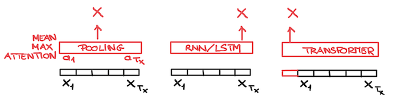
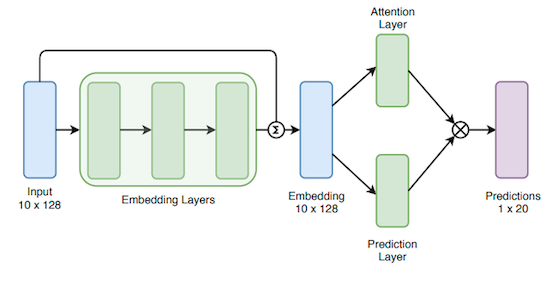
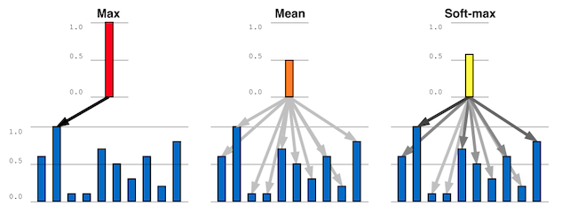

Architectures#
U-Net#
The U-Net was proposed in [RFB15] in the framework of biomedical image segmentation and made popular in MIR by [JHM+17] for singing voice separation.
The U-Net is an auto-encoder with skip-connections. The encoder (left part) downsample the spatial dimensions and increase the depth, while the decoder (right part) upsample the spatial dimensions and decrease the depth. Skip connections are added between equivalent layers of the encoder and decoder: the 256 channels level of the encoder is concatenated with the 256 level of the decoder to form a 512 tensor.

image source: [RFB15]
The goal of the skip-connections are two-folds:
to bring back details of the original images to the decoder (the bottleneck being to compressed to represent detailed information)
to facilitate the backpropagation of the gradient.
The upsampling part can be done either
using Transposed Convolution (hence a well-known checkerboard artefact may appears)
using Interpolation followed by Normal convolution
Many to One: reducing the time dimensions#
They are many different ways to reduce map a temporel sequence of embeddings \(\{X_1, \ldots X_{T_x}\}\)(Many) to a single embedding \(X\) (One).
Such a mechanism can be necessary in order to map the temporel embedding provided by the last layer of a network to a single ground-truth (such as in auto-tagging, where the whole track is from a given genre, or in Acoustic Scene Classification).

The most simple way to achieve this is to use the Mean/Average value (Average Pooling) or Maximum value (Max Pooling) of the \(X_t\) over time (as done for example in [Die14]).
Attention weighting#
Another possibility is to compute a weighted sum of the values \(X_t\) where the weights \(a_t\) are attention parameters: \(X = \sum_{t=0}^{T_x-1} a_t X_t\)
In [GSL19], it is proposed to compute these weights \(a_t\) either
by computing a new projection of the \(X_t\) and then normalizing them: \(a_t = \frac{\sigma(v^T h(X_t))}{\sum_{\tau} \sigma(v^T h(X_{\tau}))}\)
doing the same after splitting \(X_t\) in two (along the channel dimensions): the first part being used to compute “values”, the second to compute “weights”

image source: [GSL19]
Auto-Pool#
The above attention mechanism can by combined with the auto-pool operators proposed by [MSB18].
The auto-pool operators is defined as \(a_t = \frac{\exp(\alpha X_t)}{\sum_{\tau} \exp(\alpha X_{\tau})}\)
It uses a parameter \(\alpha\) which allows to range from \(\alpha=0\) (unweighted, a.k.a. average pooling), \(\alpha=1\) (softmax weighted mean), \(\alpha=\infty\): (a.k.a. max pooling). The \(\alpha\) parameters is a trainable parameters (optimized using SGD).

image source: [MSB18]
Using models#
It is also possible to use a RNN/LSTM in Many-to-One configuration (only the last hidden state \(X_{T_x}\) is mapped to an output \(\hat{y}\)).
Finally it is possible to add an extra CLASS token to a Transformer architecture.
It should be noted that the term “Attention” encapsultates a large set of different paradigms.
In the encode-decoder architecture [BCB15] it is used during decoding to define the correct context \(c(\tau)\) to be used to generate the hidden state \(s(\tau)\). For this it compares \(s(\tau-1)\) to all the hidden state of the encoder \(a(t)\).
In the transformer architecture [VSP+17] it is used to compute a self-attention. For this, the \(x(t)\) are mapped (using matrix projections) to query \(q(t)\), key \(k(t)\) and values \(v(t)\). A given \(q(\tau)\) is then compared to all \(k(t)\) to compute attention weights \(a(t,\tau)\) which are used in the weighting sum of the \(v(t)\): \(e(\tau) = \sum_t a(t,\tau) v(t)\).
RNN/ LSTM#
Transformer/ Self-Attention#
ViT
AST
HTS-AT